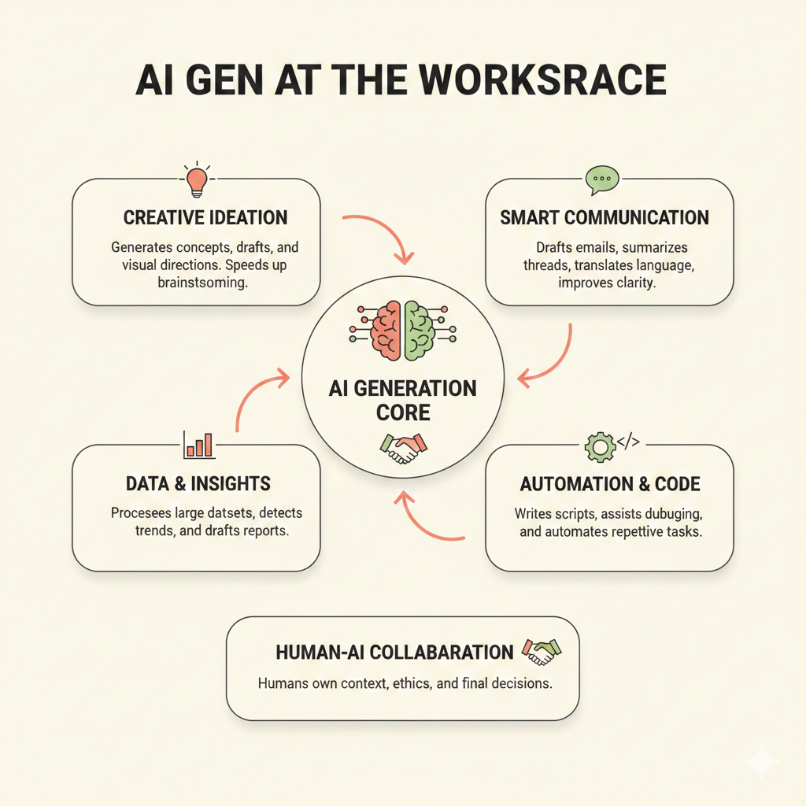

Your infographic matches the strongest trend in 2025-2026: AI is shifting from helper chat to embedded digital labor, but human oversight remains essential for accountability.
The 2026 paradigms
- Creative ideation is now prompt-to-prototype. Teams use AI to create first drafts quickly, then humans curate strategy, brand, and final judgment.
- Smart communication is becoming ambient. AI drafts mail, summarizes threads, prepares meeting context, and reduces coordination overhead.
- Data and insights move from dashboard pull to proactive push. AI tools detect patterns and produce narrative insight, while analysts verify assumptions and risk.
- Automation and code are shifting to agent workflows. Organizations are moving from isolated copilots to role-based agents that can execute bounded tasks end-to-end.
- Human-AI collaboration is the control layer. High-value teams define where AI can decide, where humans must approve, and how quality is measured.
Latest signals to watch
- Microsoft’s 2025 Work Trend Index reports a capacity gap: 53% of leaders want higher productivity while 80% of workers report low time/energy; 82% of leaders expect to use digital labor in the next 12-18 months.
- Google announced general availability of Workspace Studio on December 4, 2025, emphasizing no-code agent creation for everyday workflows.
- Anthropic’s September 15, 2025 Economic Index reports rapid workplace AI adoption and shows API usage patterns are more automation-heavy than direct chat usage.
- OECD reports that in 2025, more than one-third of people across OECD countries used generative AI tools, with strong uptake among workers and students.
- WEF’s Future of Jobs Report 2025 projects major task disruption through 2030, with AI skills and human skills (resilience, collaboration, critical thinking) rising together.
Practical next step for teams
Start with one workflow from your infographic in each category (communication, insights, and automation). Track cycle time, error rate, and stakeholder satisfaction for 30 days before scaling.